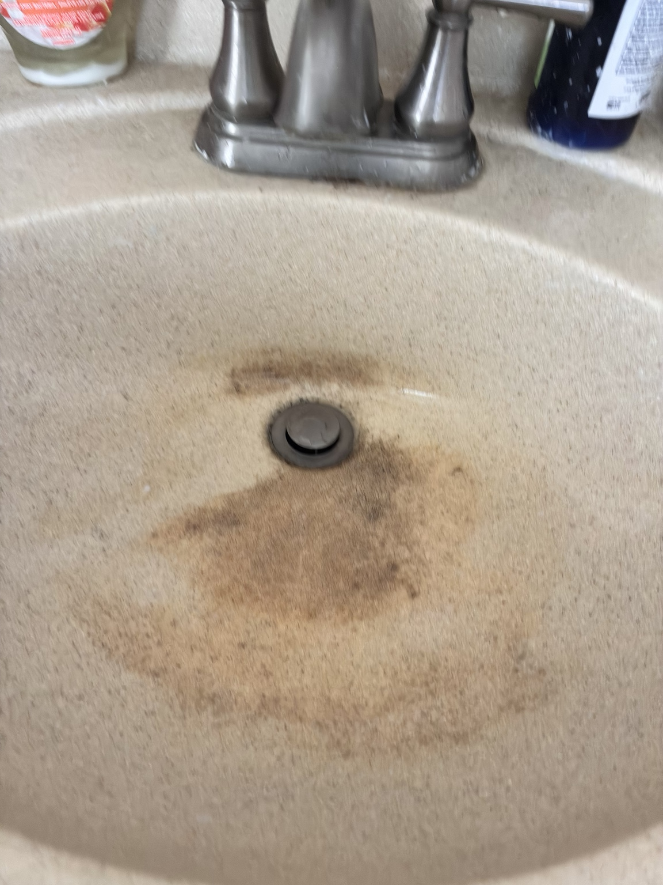

Project Overview
Diagnosed and repaired a bathroom sink that was draining slowly. I disassembled the drain system, removed the existing P-trap, drained and cleared accumulated water and debris, purchased replacement parts, and installed a new P-trap.
After the initial installation, I tested the sink and continued troubleshooting the drainage problem. I disassembled the system again, cleared the remaining buildup, reassembled the plumbing, and performed another test. The sink was successfully restored to proper drainage.
Skills demonstrated: Troubleshooting • Problem Solving • Plumbing Assembly • P-Trap Replacement • Testing • Hands-On Repair
Repair Process

1. Initial Problem
The bathroom sink was draining slowly and holding dirty standing water.

2. Disassembly & Diagnosis
Removed drain components and the existing P-trap to inspect the system and locate the drainage problem.

3. Replacement Parts
Obtained a replacement P-trap and prepared the new components for installation.

4. Installation
Installed and connected the replacement P-trap, then reassembled the sink drain system.